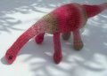

|
||
Premium Patterns Wintry Mix Mitts Love Bytes HawkeyeFree Patterns Kiddie Cadet Summerlin Ruffled Scarf Seamless DS Sock Simply Seamless Pouch Myriads of MushroomsExtras DIY Mitten Blocker Felt Patch Tutorial Yarn Dyeing Tutorial Needle Pouches Knitting Journal |
May 05, 2008 - Posted by Alice SchneblyPink and PrehistoricProject Specs Camdyn has been on a real dinosaur kick. She loves to play with her plastic dino figurines and has been watching “The Flinstones” lots lately. I was searching for a quick project and decided it was time to add a knitted dinosaur to her collection. The pattern is well written and really knits up quickly. Like Grace did on her T-Rex, I chose to use safety eyes rather than try my hand at embroidering them. I also knitted the tail in the round as well. Normally I would have picked up stitches for the arms and the legs, but I wanted to make sure I had the proper placement so instead I used fake grafting to attach them. Grace has used this technique many times with great results, but this is the first time I’ve used this technique. I have to say it works great! It takes a little more time than just using a whip stitch, but it is much more visually pleasing. Overall I think this yarn worked well for this project. I still can’t quite decide if I quite like knitting with this yarn though. It has such a unique feel to it—not soft but not scratchy, and super fuzzy. I kept having to pick little fuzz balls off from the yarn that would gather behind my pinky as I was keeping my tension. I’ve used this yarn once before for felting and I think personally I like it better in that application. I must say I have seen some really gorgeous knits that aren’t felted which makes me think maybe I should give this yarn another chance. I do admit the price is right when you compare it to other self-striping yarns and you can even purchase it up to 50% off with coupons from Jo-Ann’s or Michael’s which makes it a steal. I’m not exactly sure how practical it is for use in a toy, especially if your child still likes to put things in their mouths… with all that fuzz it would be a disaster! I made the mistake of letting Camdyn see the front page of the pattern and she has now told me that her new dino also needs a Triceratops friend. I might have to knit that one up eventually! I also wanted to say thanks for all the nice comments on our new pattern! It’s been so gorgeous outside here that I haven’t had too much computer time (Note to self: I need a laptop!) and I was happy to see a few really cute finished Summerlins already. Now that I’ve had a little mini-break from knitting, blogging, and the computer I’m ready to get back into the swing of things! Up next—I’m going to get a start on my Christmas knitting! |
   Recent ReviewsRecent Posts
 Our Favorites
|
| © 2007 KathrynIvy.com | ||
{kind=link}
{kind=link}
{kind=link}